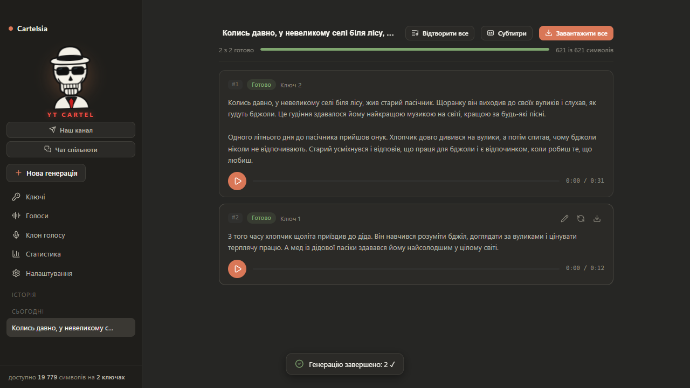
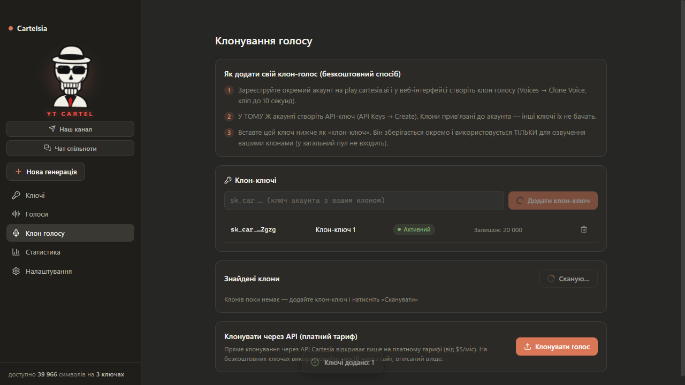

Виглядає так



Пул безкоштовних ключів Cartesia + автореєстрація акаунтів + клонування голосів. 100 000 символів тексту розподіляться по всіх твоїх ключах — але озвучаться одним голосом.
Шість систем, що працюють як одна машина
Скільки завгодно безкоштовних ключів. Best-fit розподіл: фрагмент тексту йде на ключ із найменшим достатнім залишком. Авто-заморозка вичерпаних до 1-го числа.
Фрагменти тексту генеруються одночасно на різних ключах. Ретраї з ротацією, кеш — переозвучка того самого тексту взагалі без API.
До 25 потоків у headless Chromium. Реєстрація через справжню форму, OTP прямим IMAP, ключ грабиться в тому ж сеансі. 4 стилі email — бан-слова виключені.
Будь-який публічний голос Cartesia — за Voice ID у твою бібліотеку. Озвучуй ним усім пулом: кредити списуються з твого ключа, не власника. Перевірка ревокації перед кожним прогоном.
Pro-акаунт ($5) = фабрика клонів: ffmpeg обрізає тишу і вирівнює гучність, клон публікується автоматично, дедуплікація SHA-256 береже кредити.
Realtime-чекінг на домені Cartesia (марна проксі, через яку Cartesia недосяжна). Потоки 1–50, експорт, socks5, автопенальті за 2 фейли підряд.


Все детально: ліміти, формати, файли, catch-all, ліміти потоків
| Потоків автореєстрації | 25 max (5–15 комфортно) |
| Акаунтів за прогін | до 2000 |
| Час акаунта | 50–90 с |
| Успішність | 60–85% + rescue |
| Символів на ключ | 20 000 / міс |
api_keys.txt | тільки sk_car_ ключі |
accounts.txt | дата · email · pass · key |
sessions/<email>.json | cookies для rescue |
shared_voices.json | спільні голоси |
tts-cache/ | кеш генерацій |
proxies.json | проксі між запусками |
| Random | mt8kb1dc8llr@домен |
| Слова | stone42river@домен |
| Support | support00103…@домен |
| Свій префікс | john7xk2m9a@домен |
Слово «cartelia» забанене Cartesia — більше не використовується ніде.
Реєструйся на reg.mydomain.com через ImprovMX (безкоштовно): MX записи на субдомен, wildcard увімкнено, Gmail-фільтр «Never spam». Забанять субдомен — міняєш на reg2. за 2 хвилини, основний домен живий.
Готовий промпт для Claude Code / Codex / Antigravity: агент сам склонує репо, встановить залежності, збере exe/dmg і запустить. Окремо для Windows і macOS (з розблокуванням Gatekeeper).
| sonic-3.6 | найновіша, + locale |
| sonic-3.5 | стабільна попередня |
| sonic-3 | застаріла |
Locale (en-GB, uk-UA…) взаємовиключний з language — застосунок шле одне з двох.
Понад 25 одночасних Chromium Clerk/Vercel віддають HTTP 429 масово. 5–15 = стабільно, 25 = межа.
Ні. Rescue-прохід після прогону відновлює збережену сесію і витягує ключ автоматично.
Клон голосу → Спільні голоси → встав Voice ID з діалогу Share → голос у бібліотеці. Озвучується будь-яким твоїм ключем, кредити з твого ключа.
Тільки якщо ключів багато: 100 акаунтів = 2 млн символів/міс. Автореєстрація нарегає їх автоматично.
Якщо ти на субдомені (рекомендовано) — баниться тільки він: reg. → reg2. за 2 хвилини. Основний домен недоторканий.
Portable самопідписаний — SmartScreen попереджає всі непідписані exe. Код відкритий, можна зібрати самому через AI-промпт.
Один .exe. П'ять хвилин. Твої 100 тисяч символів — уже на пулі.
⬇ Завантажити Cartelsia 2.1.3